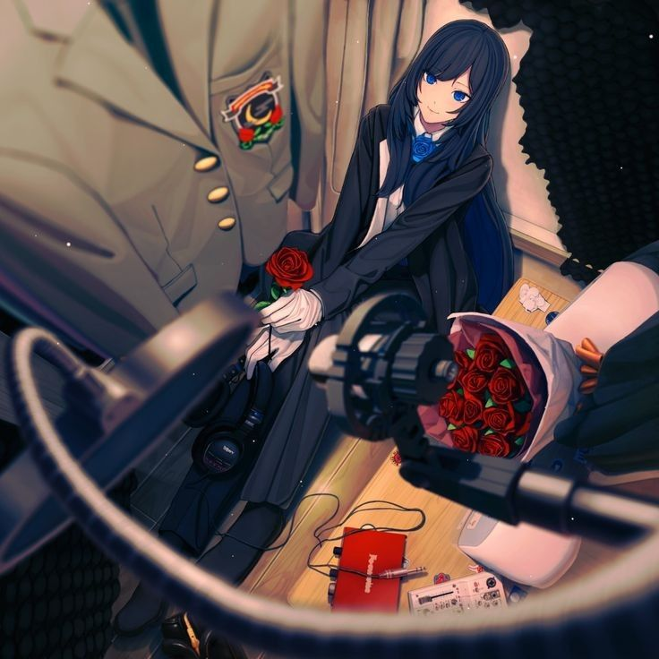
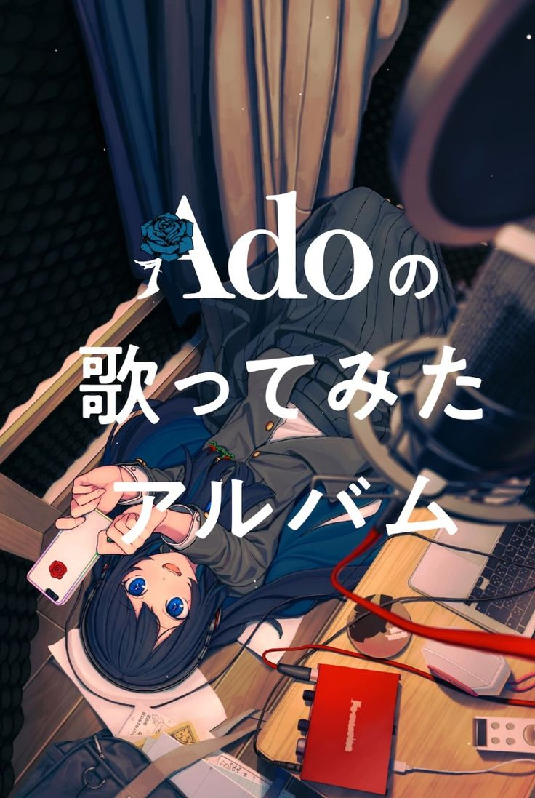
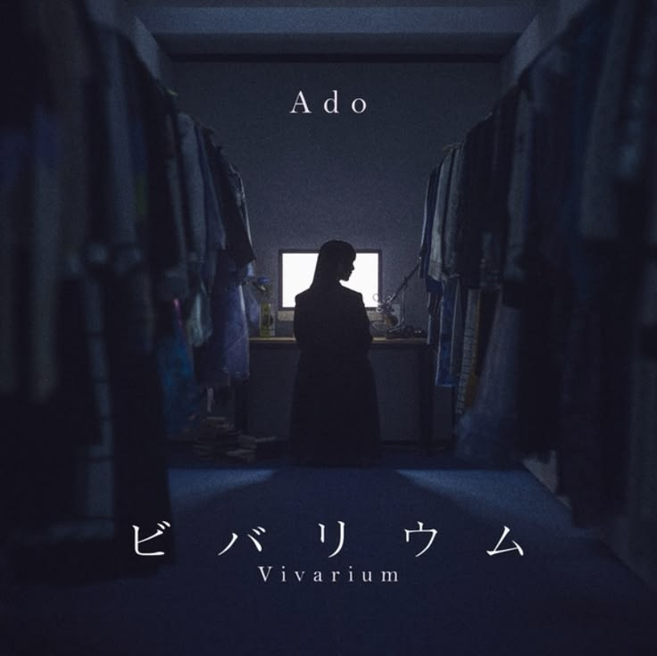

💠La Sombra que Canta💠 |
|---|
Origen: La chispa inicial
La historia de Ado no comenzó en una academia de música prestigiosa, sino en la soledad de su habitación en Japón. A los 14 años, inspirada por la cultura de los "Utaite" (intérpretes que cubren canciones de Vocaloid), decidió que quería que el mundo escuchara su voz, aunque no estuviera lista para mostrar su rostro.
 |
El estudio improvisado: Sin recursos profesionales, Ado transformó su armario en una cabina de grabación improvisada. Cubrió las paredes con material aislante para evitar el eco y, con un micrófono básico, comenzó a grabar sus primeras piezas. Este origen humilde se ha convertido en parte de su mística, simbolizando que el talento puro no conoce de lujos. |
La era de Niconico y YouTube: Bajo el nombre de Ado, comenzó a subir sus interpretaciones a la plataforma japonesa Niconico. Sus versiones de temas complejos de Vocaloid rápidamente llamaron la atención por una madurez vocal que contrastaba con su corta edad. No buscaba fama física; buscaba que su voz fuera su única identidad. |
 |
 |
El significado de su nombre: El nombre "Ado" proviene de una palabra utilizada en el teatro tradicional japonés (Kyogen). En las obras, el "Ado" es el actor secundario o el que apoya al protagonista (Shite). Ella eligió este nombre con la esperanza de que su música pudiera ser un apoyo para la vida de las personas, convirtiéndose en el "actor de reparto" en la historia de sus oyentes. |